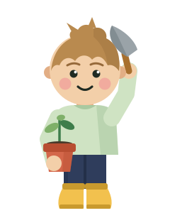
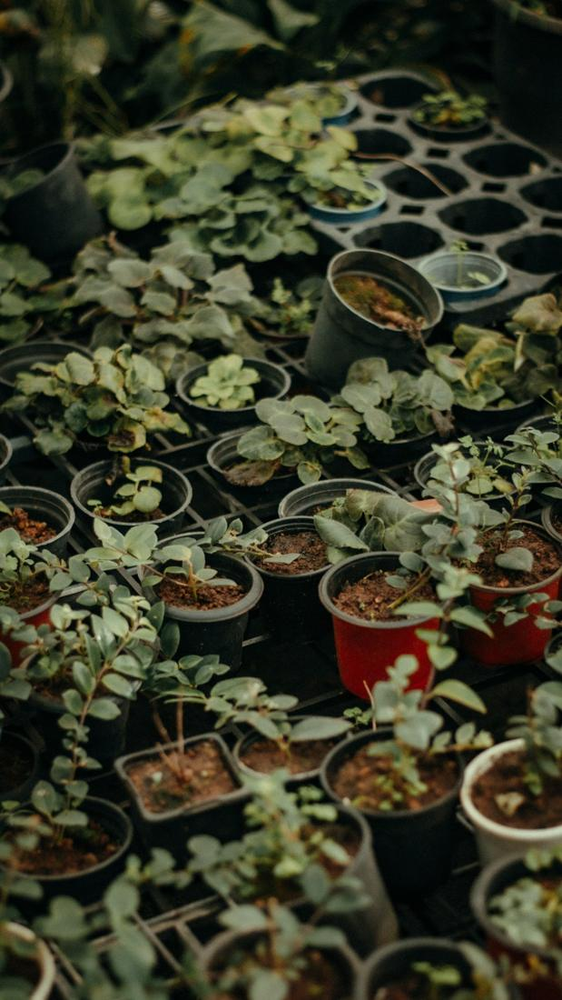

Tanaman yang betah di rumahmu.
Dari monstera buat sudut ruang tamu sampai benih tomat buat balkon, semuanya ada di rak kami di Jl. Gaharu I, Cipete. Media tanamnya kami racik sendiri, dan yang jawab WhatsApp ya orang yang tiap hari ngurus tanamannya.
Lihat semua produkYang ada di rak kami.
- Tanaman hias
- Benih & bibit
- Media tanam racikan sendiri
- Pupuk & nutrisi
- Pot & tatakan
- Alat berkebun
- Gratis ongkir sekitar Cipete
Angka dari etalase Tokopedia.
- rating di Tokopedia
- 5.0
- ulasan pembeli
- 23,6 rb
- produk terjual
- 205 rb+
- sekitar Cipete dan BSD
- Gratis ongkir
- Juga di Shopee
- JakartaTangerang BSD
Mulai dari rak yang mana?
Pilih satu rak. Harganya sama kayak di Tokopedia, stoknya bisa kamu tanya lewat WhatsApp.
Yang paling sering ditanyain.
Semua produkYang kami kerjakan tiap hari.
Tanaman yang sudah beradaptasi di Jakarta
Dirawat di Cipete, kena panas dan lembapnya Jakarta tiap hari, jadi nggak kaget waktu pindah ke rumahmu.
Media tanam racikan sendiri untuk aroid, sukulen, anggrek
Aroid mix, orchid mix, sekam, perlite, cocopeat. Kami aduk sendiri di toko, dan takarannya boleh kamu tanya.
Saran lewat WhatsApp dari orang yang ngurus tanamannya
Tanya stok, ongkir, atau kenapa daunnya menguning. Dibalas pas toko buka.
Cara belanja.
Lewat halaman ini, Tokopedia, atau Shopee. Harganya sama di mana pun.
-
Pilih di rak, di Tokopedia, atau di Shopee
Lihat-lihat di halaman produk kami, atau langsung di etalase Tokopedia dan Shopee. Harganya sama.
-
Chat WhatsApp buat cek stok dan ongkir
Kirim nama produknya, kami cek stoknya dan hitung ongkir ke alamatmu.
-
Diantar sekitar Cipete, atau ambil di toko
Sekitar Cipete dan BSD gratis ongkir. Mau ambil sendiri juga boleh, toko buka jam 10 sampai 5 sore.
Catatan dari toko.
Semua tips
Main sebentar: Tunas & Hutan Lestari.
Lompat dari dahan ke dahan, kumpulin benih, tanam pohon. Rekormu tersimpan di browser.
Main sekarang
Bingung pilih yang mana?
Kirim foto sudut ruangannya, kami bantu cocokin tanamannya. Dibalas waktu toko buka, jam 10 sampai 5 sore.